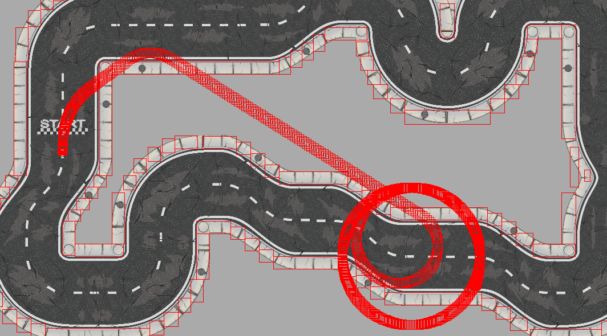

I intend to make a top-down, 2D, arcade-style racing game in PixiJS. I don't think the physics of it will be too dificult and it seems realistically doable within the time frame. Stretch goals would be randomly generated tracks and particle effects that would aid game feel, such as skid marks.
Top-down 2D Racing Simulator
I'm specifically designimg for desktop
I'm not aiming for anything in particular, but I wan't the game to seem more hand drawn and less pixel arty
Player should be able to go forward, reverse, and turn their car. Racing games usually don't get too fancy with the controls at this level.
Donovan Scullion
Game Design and Development BS
Psychology
My primary skills and interests are game/simulation programming and playing games.
I hate PixiJS. It was ultimately the root of most of my problems and fought against me the entire way. Despite having done an exorbitant amount of work on this project, it's missing most requirenments and it's difficult to tell that i've even worked on it that much. I used Pixi 7 for this project, which was a bad idea because it has no helpful documentation yet and mostly ditches everything in previous versions of the program. I used PIXI 7 over PIXI 6 because it still had some documentation, and i'm hesitant to say I would have done better on PIXI 6 due to it no longer having documentation. By the time I realized I would rather change to the earlier version (around the demo date), it was too late for me to swap because all the code would need to be rewritten and I had other classes constraining me. It took me an excessively long time to even load assets on the screen, because the loader no longer exists in PIXI. Scope was another problem I had. My game didn't, and still doesn't sound that large in scope, but the way it had to be made (explained in other sections below) and work for other classes made it unachievable within the timeframe. Final projects became all the rage among professors this semester, which I didn't see coming, so I spent the final two weeks of the semester balancing 4 projects and a research paper, on top of regualar class work before finals week started. I think even given an extra day or two, this project could have been noticably improved and at least fit in the requirements I was missing. Nothing I did was to the level I would have wanted it, though I may continue with this project until I get it into a presentable state.
Players are expected to drive through several checkpoints to complete each lap, and upon completing 3 laps, the win the game. I didn't have anywhere near enough time to to have start and end screens, and I wasn't able to keep track of and display time to the player like I would have liked to. I did, however, get all the logic down for paying attention to checkpoints and laps, and while nothing will visually change upon completion, the program will send a message to the log that they have finished the race after they complete 3 laps.
Roads were fairly tedius and took a while to be put in. All the track pieces were inconsistent sizes, and some of them had random amounts of transparency on a few sides that made using the pivot and math to connect tracks inconsistent, so there was a lot of guessing and testing on the coordinates tracks needed to be placed to connect to eachother. In the image above, you can see that the way PIXI interpreted the bounds of the sprites doesn't even seem consistent, and I'm still not sure why that is. Placing the track took a lot longer than I would have liked, using 28 track pieces. I do like the final layout of the board, however. I learned what ES6 classes were fairly late into the project, and subsequently learned that PIXI really messed them up and made it hard make any that utilized PIXI classes. I couldn't find a way to make a class that let sprites move after they were established, so the roads are the only instance of an object class I was able to create. There's no real benefit to having the roads as an object class as they don't functionally change at all, so i'm hesitant to claim that I met requirenments for ES6 classes.
Hitboxes for the roads were the most time consuming part of the project. It was also one of the first things I tackled as it made up the majority of the feedback I got from the in-person playtest. Roads are meant to significantly slow the player down but not stop them, and they were successful at performing that duty. I originally tried to make pixel perfect hitboxes utilizing for the eges of the road by using code to recgnice the pixel colors of the boder. This ended up not working because any guides on the subject used earlier versions of PIXI and none of those classes/methods existed in the current one. Yippe. I had to do the same thing I did to the roads and handplace each hitbox on the map. 109 in total. This was a massive waste of time is one of those unfortunate things you don't quite realize in the initial scope of a project. I might have reconsidered using only 90 degree angle track pieces to cut down on time if I realized things would get so bad.
The way the player car controls is something i'm pretty proud of, and it mostly uses acceleration and velocity. Most of the design is really subtle additions to make driving a bit more complex. For example, turning the car very slightly reduces the cars speed, to a degree where the player doesn't really notice that much. This is realistic, and encourages players to attempt to drive straighter lines. Additionally, the players turn radius is affected by how fast they're going, with sharper turns being possible at higher speeds. This makes driving feel more fluid, and as seen above, will have a noticable impact in the long term if a player starts turning too long. While it feels good, a problem with this is that some of the turns are very hard to make a lower speeds, which usually only happens after a player rides against one of the road borders. I managed to fix this by making it so that players backing up on the border isn't nearly as slow as attempting to travel forward still, which lets players quickly get out of the rough and build up enough speed to take whatever turn they're on faster than they probably would have by just driving through the wall.
Other than problems with ES6 classes, the thing that's immediately missing is sound. The requirements on sound weren't very explicit so it was something I got a pretty late start on, and by late I mean the day the project was due (It didn't seem like a priority with the state everything else was in, to be fair). Like in Circle Blast, I used the howler library to import and use sound. My problem was that, even copying the way it was used in Circle Blast, I couldn't get it to work at all in the program, and kept giving console messages that the server didn't have persmission to play audio. I tried to debug for a few hours but the submission deadline quickly snuck up on me, so I had to scrap everything I was working with. The Howler library is still loaded in my final submission of the project, so technically, the concept of sound does still exist in the universe the game takes place in.
Car: https://grafxkid.itch.io/mini-pixel-pack-2
Track: https://free-game-assets.itch.io/free-race-track-tile-set
Roads are the only thing that function as a class in my program, and they don't come with any helpful or built in functions.
Experimented with but absent.
Player able to drive and control their car to a high degree around the race track.
Honestly too much time was put into documentation. It's begun eating at other impending deadlines.